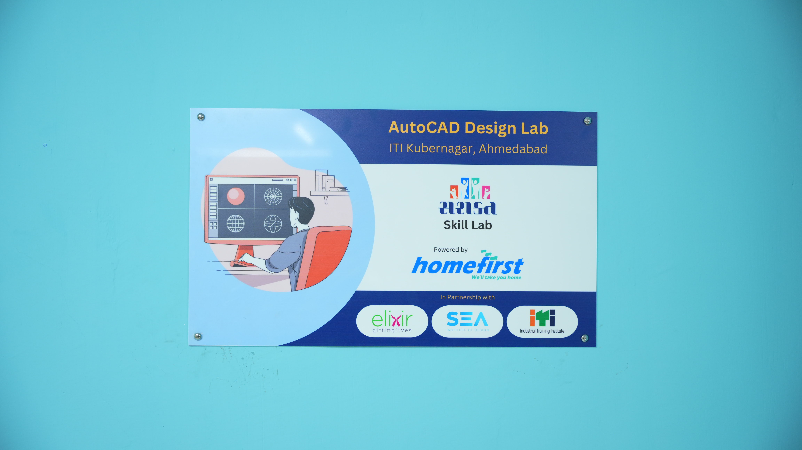

AutoCAD
Learn technical drawing and digital design.
Sashakt connects young learners with practical training at partner institutions through digital design and automotive programmes.
Explore programme ↓ Youth technical training · Naroda report archive ↗
Youth technical training · Naroda report archive ↗
AutoCAD Design Lab at ITI Kubernagar ↗Learn technical drawing and digital design.
Practise workshop skills and vehicle systems.
Explore electric mobility technology.
Develop practical skills for work.
The figures refer to different courses and reporting periods; they should not be added.